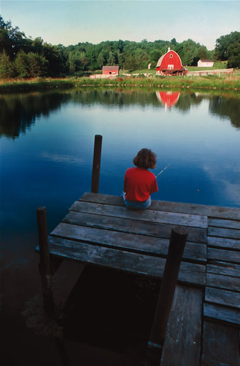

To create a dug-and-dammed pond, like the one in the illustration below, first remove the topsoil covering the foundation area, and dig a core trench (shown as a dark gray triangle) that extends to clay or bedrock. Then fill the trench with well-compacted dense material. To prevent the dam from washing out during heavy rains, install a vertical overflow pipe and horizontal spillway pipe with anti-seep collars (to prevent leaks from developing along the pipes) at the base of the dam. The top of the overflow pipe should be about 21/2 feet below the top of the dam. After the pipes are installed, dig soil from the pond area and construct the dam over the core trench, with the front (water) side of the dam at a 3:1 slope and the back of the dam at a 2:1 slope.